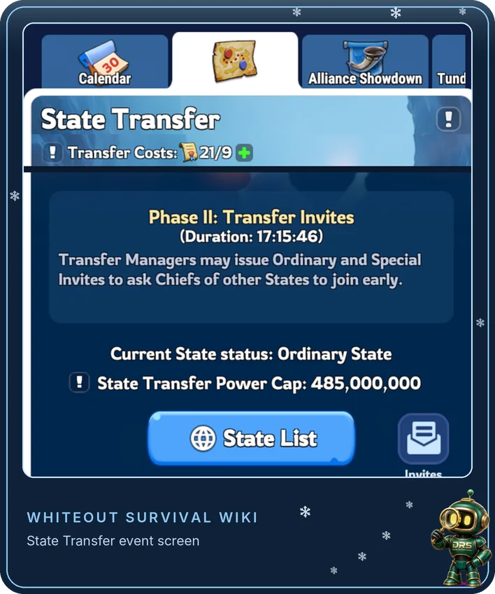
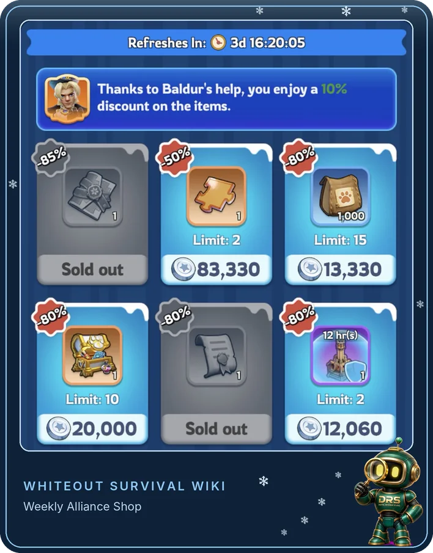
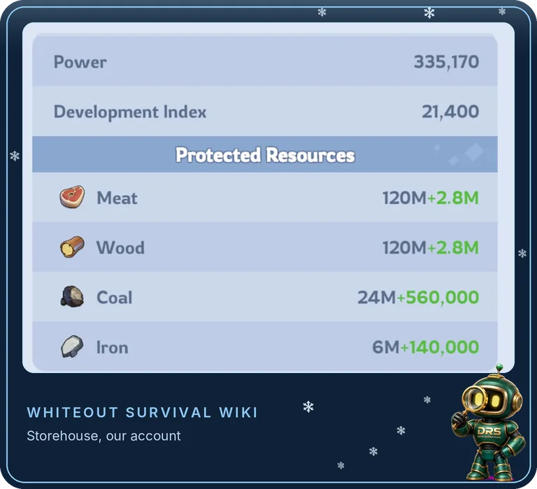
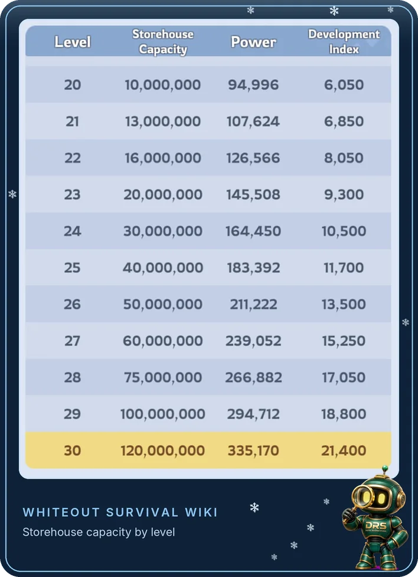
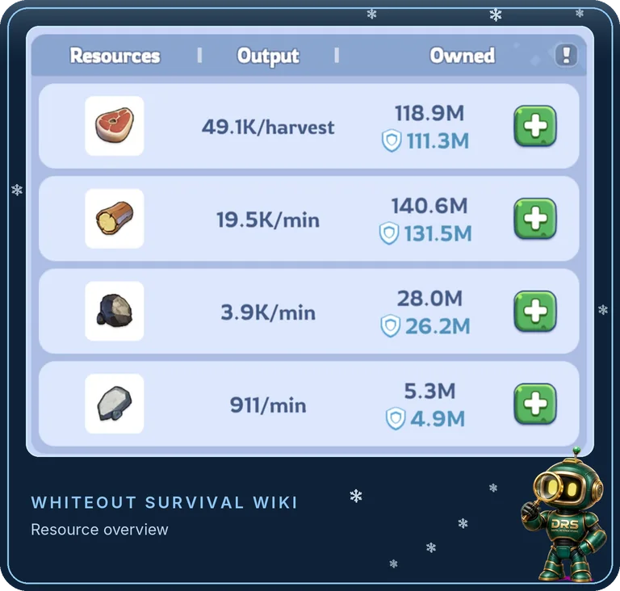

Written from our own transfer, November 2026. We moved one of our accounts to a new state in the November transfer event. This guide follows what we actually did, the questions we had to look up, and the rules the game shows on the event screen.
What Is a State Transfer?
A state transfer moves your whole account, Furnace, buildings, heroes, gear and all, from your current state to a new one. The event itself only runs for about a week, but the move is permanent. You cannot transfer back, and you have to wait 30 days before you can transfer again.
Players move for all sorts of reasons: a state that has gone quiet, an alliance that runs events at times they can never make, or simply wanting a fresh start. We had a good state and a good alliance, but we wanted to meet new players and see how another state plays. A new state brings new friends and new perspectives, and that feeds straight back into this wiki.
When Do State Transfers Happen?
There is no fixed schedule. A transfer event appears in the event calendar every few weeks, usually with a few days' notice, and lasts around seven days. Ours ran from 8 to 14 November 2026 (UTC). Each event has three phases:

Can I Transfer?
The game only opens up states that are a reasonable match for your account. Before you plan a move, check these:
- Same stage of the game. The new state must be on the same hero generation and Fire Crystal level as your current state.
- Similar age. You cannot move to a state your character is 45 or more days older than, which stops long-established accounts dropping into much younger states.
- Power under the cap. Every state has a Transfer Power Cap. If your power is under it, you can move in with an Ordinary Invite or in the open phase. Above it, you need a Special Invite.
- Enough Transfer Passes. The event screen shows how many you hold against how many the move will cost.
- A free slot. Each state can only take a limited number of transfers per event. Tap State List and select a state to see where it stands.
- Room for your account. A state can hold up to four of your characters, so a second or third account in the same state is fine.
Leading States and Ordinary States. The strongest states are marked as Leading States. Their Power Cap is fixed at the lowest setting and they cannot send Special Invites, and they take fewer transfers per event than Ordinary States. If your power is high, an Ordinary State is usually the easier move.
How Many Transfer Passes Do I Need?
It depends on two numbers: your own Transfer Score, which reflects how strong your account is, and the Transfer Rating of the state you want to join. You can see both, along with the exact number of passes, at the bottom right of that state's transfer page. Costs usually fall somewhere between 1 and 50 passes. Our move cost 9.
Dismissing troops or taking off gear does not lower your Transfer Score, so there is no trick to make a move cheaper.
Where do Transfer Passes come from?
The steady free source is the weekly Alliance Shop, which sells one Transfer Pass a week. On our account it costs 150,000 Alliance Tokens. The shop always shows it with an 80% off label, so do not wait for a better deal. If you have the Baldur expert, his bonus also takes 10% off Alliance Shop items, which is the note you can see at the top of the shop.

Passes are also sold in packs, with up to 85 on sale each month, but nothing in this guide needs them.
Our top tip: buy one every week. Even if you have no plans to move, pick up the Transfer Pass from the Alliance Shop every week. When the right state comes along, you will have the passes ready instead of waiting months to save them.
How to Find a New State and Alliance
You do not have to pick a state blind. During a transfer event, states recruit openly, so most of the work is a conversation.
Check their event times before you move
This is the step most players skip, and it matters. Ask the alliance when they run Bear Trap, Foundry Battle, Crazy Joe and their other alliance events, and make sure those times suit you. In our old alliance, several events ran at times we were rarely online, and we missed Crazy Joe almost every time. A new state is a chance to fix that, so do not waste it.
Your Pre-Transfer Checklist
- Bring every march home. Recall troops from gathering, rallies and reinforcements.
- Heal your troops. Empty the infirmary before you go.
- Spend resources over your Storehouse limit. Anything above your protected amount is lost when you move. The next section shows how to check.
- Leave resource chests unopened. Resources still in chests in your backpack are safe and move with you.
- Check your event progress. If you move during an event with a leaderboard, you only get rewards for your progress, not for your final ranking. Time your move around events you care about.
- Leave your alliance. You have to leave before you can transfer. See below for when.
When should I leave my alliance?
This was the question we had to look up. If you are on a state's Ordinary Invite list, you do not need to rush. Ordinary Invites do not send a notification: they wait quietly behind the Invites button on the event screen. We stayed with our alliance until after the daily reset, then left. The invite was still there, ready to accept. Special Invites are different and arrive by mail.
Will I Lose Resources?
Only if you move with more than your Storehouse protects. Resources above your protection limit are lost in the transfer, so check before you go. It takes a minute.
Step 1: find your protection limit
Tap your Storehouse. The Protected Resources panel lists the most you can carry of each resource. Meat and Wood are protected up to your Storehouse capacity. Coal is protected to a fifth of that and Iron to a twentieth. Research and other bonuses add a little on top, shown in green.

Your capacity depends on your Storehouse level. Tap More Details to see the full table: it runs from 10M at level 20 to 120M at level 30. The table shows the Meat and Wood figure. On our level 30 Storehouse, Coal was protected to a fifth of it and Iron to a twentieth, so check the Protected Resources panel on your own Storehouse for your exact Coal and Iron limits.

Step 2: compare what you hold
Open your resource Overview (the Resource Production tab). Each resource shows two figures. The figure next to the small shield is what is sitting in your city, and that is the one to compare with your protection limit. The larger figure above it also counts resources you still hold as unopened chests and items in your backpack, and those are safe: they move with you whatever your Storehouse level.

Here is how the check works on the screenshot above, which we took after our move. Our limits are roughly 122.8M Meat and Wood, 24.6M Coal and 6.1M Iron:
When we actually transferred, all four were under the limits, so we did not need to spend anything and everything came with us. Our resources have built up since, which is why Wood and Coal are over in the screenshot.
If one of yours is over, spend the extra before you move: upgrade a building, train or promote troops, or finish research. And do not open resource chests from your backpack until you have arrived, because unopened chests are safe.
How to Transfer, Step by Step
What Carries Over, and What Does Not
What It Was Like
Everything felt new for the first few days, but the new state and alliance were very welcoming. They moved us into a prime Bear Trap spot, sent gifts and welcomed us in chat. Good alliances look after the players who transfer in, so the way an alliance treats you during recruiting is a fair sign of what it will be like to play with them.
What Most Players Get Wrong
Moving with resources over the limit. The extra is gone for good. Check the shield figures first.
Opening resource chests before moving. Unopened chests are safe. Opened, they count towards your limit.
Leaving the alliance too early. If you are on an Ordinary Invite list, the invite will wait. Stay for the reset and your last events.
Not checking event times. A great alliance is no use if its events run while you sleep.
Saving passes too late. One pass a week adds up slowly. Start buying them before you need them.
Moving in the middle of a ranked event. You lose the ranking rewards, so finish the events that matter to you first.
State Transfer Questions
Is a state transfer permanent?
Yes. The event ends after about a week, but you stay in your new state. You cannot transfer back, and you have to wait 30 days before transferring again.
How often are state transfers?
There is no fixed schedule. Events appear in the in-game calendar every few weeks, so keep an eye on it and keep buying passes in the meantime.
What is the difference between an Ordinary Invite and a Special Invite?
An Ordinary Invite is for Chiefs within a state's Power Cap. It sends no notification and only shows under the Invites button. A Special Invite is for Chiefs above the Power Cap, arrives by mail, and each state can only hold three at a time.
Does the inviting state pay for my Transfer Passes?
No. Whoever invites you, the passes come from your own account.
Check on your own screens. Pass costs, power caps, Storehouse limits and event dates are different for every account and state. Tap the ! icons on the State Transfer screen to see the rules for your event before you move.